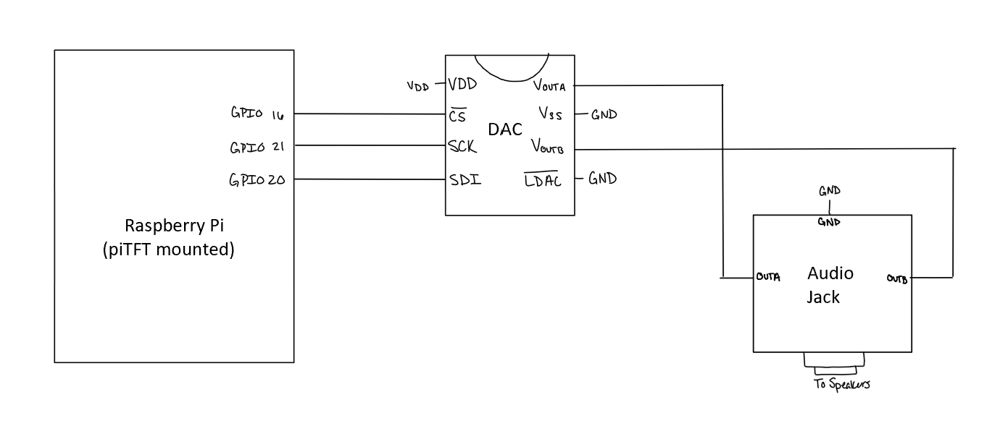

This drawing below shows the schematic for the main and peripheral hardware:
As shown, the the Raspberry Pi commuincates with the exterrnal Digital to Analog Converter chip, so all the audio processing occurs in the digital domain. The DAC directly outputs to an audio jack connector, which then is connected to a set of speakers.
Design & Audio Processing
Because the ultimate goal of this project is to manipulate the audio to hear different frequency ranges at different volumes, much of the audio processing occurs in the frequency domain. The .wav files, however, that are loaded into the Python program, hold their information in the time domain, thus requiring us to apply a Fourier transform to the audio file to extract its frequency spectrum. This was accomplished by splitting up the song into chunks of time and running an FFT (using functions in Python's numpy module) on that time chunk of time. These chunks contain 1024 frames, and with a frame rate of 44100 frames per second, means that these time chunks are about 20 milliseconds. These frequency buckets are created for each time chunk in the song at the beginning of the Python script when a song is chosen.
The song plays by first applying an inverse FFT onto a frequency bucket, which returns the time-domain representation of that time chunk. Then, the script will go frame-by-frame in the output time chunk from the inverse FFT, configure the bits for the DAC, and output them to the DAC using SPI. This will reverse for each frequency bucket that was created at the beginning of the script. In order to manipulate the sounds of the audio output, the frequency buckets are modulated before the inverse FFT is applied. The audio manipulation is done by multiplying the frequency bucket with an array of the same size. This multiplication is element-wise, so the array that the frequency bucket will be multiplied by represents an array of scalars that will either increase or decrease the values at a given frequency. For example, cutting out the high frequencies requires a scalar array that is 1's for all frequencies lower than 4000 Hz and 0's for frequencies above 4000 Hz. In this way, the high-frequency range is removed from the frequency bucket, but the magnitudes of the other frequencies stay the same. Additionally, the frequencies can be multiplied by fractions in order to decrease the magnitudes of the frequency ranges, but not completely cut them out. The scalars for each frequency are determined by the values that the interface reads.